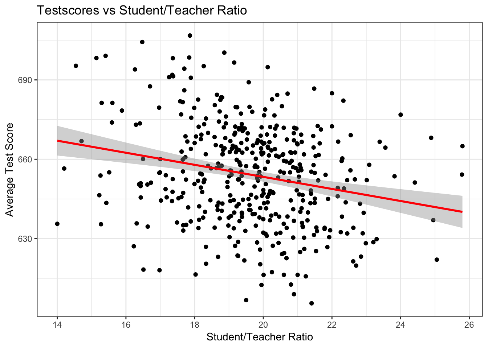

Chapter 3 Linear Regression
Notes:
stop at R-squared * different data: missing variable * non-linear realtionship
3.1 Data on Cars
We will look at the built-in cars dataset. Let’s get a view of this by just typing View(cars) in Rstudio. You can see something like this:
## speed dist
## 1 4 2
## 2 4 10
## 3 7 4
## 4 7 22
## 5 8 16
## 6 9 10We have a data.frame with two columns: speed and dist. Type help(cars) to find out more about the dataset. There you could read that
The data give the speed of cars (mph) and the distances taken to stop (ft).
It’s good practice to know the extent of a dataset. You could just type
dim(cars)## [1] 50 2to find out that we have 50 rows and 2 columns. A central question that we want to ask now is the following:
3.1.1 How are speed and dist related?
The simplest way to start plot the data. Remembering that we view each row of a data.frame as an observation, we could just label one axis of a graph speed, and the other one dist, and go through our table above row by row. We just have to read off the x/y coordinates and mark them in the graph. In R:
plot(dist ~ speed, data = cars,
xlab = "Speed (in Miles Per Hour)",
ylab = "Stopping Distance (in Feet)",
main = "Stopping Distance vs Speed",
pch = 20,
cex = 2,
col = "red")Here, each dot represents one observation. In this case, one particular measurement speed and dist for a car. Now, again:
How are speed and dist related? How could one best summarize this relationship?
One thing we could do, is draw a straight line through this scatterplot, like so:
plot(dist ~ speed, data = cars,
xlab = "Speed (in Miles Per Hour)",
ylab = "Stopping Distance (in Feet)",
main = "Stopping Distance vs Speed",
pch = 20,
cex = 2,
col = "red")
abline(a = 60,b = 0,lw=3)
Now that doesn’t seem a particularly good way to summarize the relationship. Clearly, a better line would be not be flat, but have a slope, i.e. go upwards:

That is slightly better. However, the line seems at too high a level - the point at which it crosses the y-axis is called the intercept; and it’s too high. We just learned how to represent a line, i.e. with two numbers called intercept and slope. So how to choose the best line?
3.1.2 Choosing the Best Line
Suppose we have the following set of 9 observations on x and y, and we put the best straight line into it, that we can think of. It looks like this:
Figure 3.1: The best line and its errors
The red arrows indicate the distance of the line to each point and we call them errors or residuals, often written with the symbol \(\varepsilon\). An upward pointing arrow indicates a positive value of a particular \(\varepsilon_i\), and vice versa for downward pointing arrows. The name residual comes from the way we write an equation for this relationship between two particular values \((y_i,x_i)\) belonging to observation \(i\):
\[ y_i = \beta_0 + \beta_1 x_i + \varepsilon_i \tag{3.1} \]
Here \(\beta_0\) is the intercept, and \(\beta_1\) is the slope of our line, and \(\varepsilon_i\) is the value of the arrow (i.e. a positive or negative number) indicating the distance between the actual \(y_i\) and what is predicted by our line. In other words, \(\varepsilon_i\) is what is left to be explained on top of the line \(\beta_0 + \beta_1 x_i\), hence, it’s a residual to explain \(y_i\). Now, back to our claim that this is the best line. What exactly characterizes the best line?
Wait a moment, why squared residuals? This is easy to understand: suppose that instead, we wanted to just make the sum of the arrows in figure 3.1 as small as possible (that is, no squares). Choosing our line to make this number small would not give a particularly good representation of the data – given that errors of opposite sign and equal magnitude offset, we could have very long arrows (but of opposite signs), and a poor resulting line. Squaring each error avoids this (because now negative errors get positive values!) We illustrate this in figure 3.2. This is the same data as in figure 3.1, but instead of arrows of length \(\varepsilon_i\) for each observation \(i\), now we draw a square with side \(\varepsilon_i\), i.e. an area of \(\varepsilon_i^2\). You will see in the practical sessions that choosing a different line to this one will increase the sum of squares.

Figure 3.2: The best line and its SQUARED errors
3.1.3 Ordinary Least Squares (OLS) Coefficients
The method to estimate \(\beta_0\) and \(\beta_1\) we illustrated above is called Ordinary Least Squares, or OLS. There is a connection between the estimate for \(\beta_1\) - denoted \(\hat{\beta}_1\) - in equation (3.1) and the covariance of \(y\) and \(x\) - remember how we defined this in section 2.3. In the simple case shown in equation (3.1), the relationship is
\[ \hat{\beta}_1 = \frac{cov(x,y)}{var(x)}. \tag{3.2} \] i.e. the estimate of the slope coefficient is the covariance between \(x\) and \(y\) divided by the variance of \(x\). Similarly, the estimate for the intercept is given by
\[ \hat{\beta}_0 = \bar{y} - \hat{\beta}_1 \bar{x}. \tag{3.3} \]
where \(\bar{z}\) denotes the sample mean of variable \(z\).
3.1.4 Correlation, Covariance and Linearity
It is important to keep in mind that Correlation and Covariance relate to a linear relationship between x and y. Given how the regression line is estimated by OLS (see just above), you can see that the regression line inherits this property from the Covariance. A famous exercise by Francis Anscombe (1973) illustrates this by constucting 4 different datasets which all have identical linear statistics: mean, variance, correlation and regression line are identical. However, the usefulness of the statistics to describe the relationship in the data is not clear.
The important lesson from this example is the following:
3.1.5 Non-Linear Relationships in Data
Suppose our data now looks like this:

Putting our previous best line defined in equation (3.1) as \(y = \beta_0 + \beta_1 x + u\), we get something like this:

Figure 3.3: Best line with non-linear data?
Somehow when looking at 3.3 one is not totally convinced that the straight line is a good summary of this relationship. For values \(x\in[50,120]\) the line seems to low, then again too high, and it completely misses the right boundary. It’s easy to address this shortcoming by including higher order terms of an explanatory variable. We would modify (3.1) to read now
\[ y_i = \beta_0 + \beta_1 x_i + \beta_2 x_i^2 + \varepsilon_i \tag{3.4} \]
This is a special case of multiple regression, which we will talk about in chapter 5. You can see that there are multiple slope coefficients. For now, let’s just see how this performs:

Figure 3.4: Better line with non-linear data!